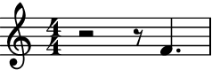
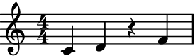
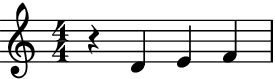
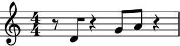

auxjad.Fader¶
-
class
auxjad.Fader(contents: abjad.core.Container.Container, *, fader_type: str = 'out', max_steps: int = 1, repetition_chance: float = 0.0, process_on_first_call: bool = False, disable_rewrite_meter: bool = False, omit_time_signatures: bool = False, use_multimeasure_rests: bool = True, mask: Optional[list] = None, boundary_depth: Optional[int] = None, maximum_dot_count: Optional[int] = None, rewrite_tuplets: bool = True, include_empty_measures: bool = True, prettify_rewrite_meter: bool = True, extract_trivial_tuplets: bool = True, fuse_across_groups_of_beats: bool = True, fuse_quadruple_meter: bool = True, fuse_triple_meter: bool = True)¶ This class takes an
abjad.Container(or child class) as input and gradually removes or adds notes one by one.- Basic usage:
Calling the object will return an
abjad.Selectiongenerated by the fading process. Each call of the object will apply the fading process to the previous result. By default, the container will be faded out (that is, its notes will be gradually removed one by one).>>> container = abjad.Container(r"c'4 ~ c'16 d'8. e'8 f'8 ~ f'4") >>> fader = auxjad.Fader(container) >>> notes = fader() >>> staff = abjad.Staff(notes) >>> abjad.f(staff) \new Staff { \time 4/4 c'4 ~ c'16 d'8. e'8 f'4. }

>>> notes = fader() >>> staff = abjad.Staff(notes) >>> abjad.f(staff) \new Staff { \time 4/4 c'4 ~ c'16 r8. e'8 f'4. }

>>> notes = fader() >>> staff = abjad.Staff(notes) >>> abjad.f(staff) \new Staff { \time 4/4 r2 e'8 f'4. }

The property
current_windowcan be used to access the current window without processing it.>>> notes = fader.current_window() >>> staff = abjad.Staff(notes) >>> abjad.f(staff) \new Staff { \time 4/4 r2 e'8 f'4. }

process_on_first_call:The very first call will output the input container without processing it. To disable this behaviour and apply the fading process on the very first call, initialise the class with the keyword argument
process_on_first_callset toTrue.>>> container = abjad.Container(r"c'4 d'4 e'4 f'4") >>> fader = auxjad.Fader(container, ... process_on_first_call=True, ... ) >>> notes = fader() >>> staff = abjad.Staff(notes) >>> abjad.f(staff) \new Staff { \time 4/4 c'4 d'4 e'4 r4 }

fader_type:The fader can be of two types, either
'in'or'out'defined by the keyword argumentfader_type. When it is set to'in', the fader will start with an empty container with the same length and time signature structure as the input music and will gradually add the original notes one by one.>>> container = abjad.Container(r"c'4 ~ c'16 d'8. e'8 f'8 ~ f'4") >>> fader = auxjad.Fader(container, ... fader_type='in', ... ) >>> notes = fader() >>> staff = abjad.Staff(notes) >>> abjad.f(staff) \new Staff { \time 4/4 R1 }

>>> notes = fader() >>> staff = abjad.Staff(notes) >>> abjad.f(staff) \new Staff { \time 4/4 r2 r8 f'4. }
>>> notes = fader() >>> staff = abjad.Staff(notes) >>> abjad.f(staff) \new Staff { \time 4/4 c'4 ~ c'16 r8. r8 f'4. }

- Changing
fader_typeafter initialisation: The property
fader_typecan also be changed after initialisation, as shown below.>>> container = abjad.Container(r"c'4 d'4 e'4 f'4") >>> fader = auxjad.Fader(container) >>> notes = fader() >>> staff = abjad.Staff(notes) >>> abjad.f(staff) \new Staff { \time 4/4 c'4 d'4 e'4 f'4 }

>>> notes = fader() >>> staff = abjad.Staff(notes) >>> abjad.f(staff) \new Staff { \time 4/4 c'4 d'4 r4 f'4 }
>>> notes = fader() >>> staff = abjad.Staff(notes) >>> abjad.f(staff) \new Staff { \time 4/4 c'4 d'4 r2 }
>>> fader.fader_type = 'in' >>> notes = fader() >>> staff = abjad.Staff(notes) >>> abjad.f(staff) \new Staff { \time 4/4 c'4 d'4 e'4 r4 }

>>> notes = fader() >>> staff = abjad.Staff(notes) >>> abjad.f(staff) \new Staff { \time 4/4 c'4 d'4 e'4 f'4 }

include_empty_measures:When
fader_typeis set to'out', the process will end on an empty measure; when it is set to'in', it will start on an empty measure. Setinclude_empty_measurestoFalseto exclude the empty measures (default isTrue). This can be used in conjunction withprocess_on_first_call.>>> container = abjad.Container(r"c'4 d'4 e'2") >>> fader = auxjad.Fader(container, ... fader_type='in', ... include_empty_measures=False, ... ) >>> staff = abjad.Staff(fader.output_all()) >>> abjad.f(staff) \new Staff { \time 4/4 c'4 r2. c'4 d'4 r2 c'4 d'4 e'2 }
>>> container = abjad.Container(r"c'4 d'4 e'2") >>> fader = auxjad.Fader(container, ... fader_type='out', ... include_empty_measures=False, ... ) >>> staff = abjad.Staff(fader.output_all()) >>> abjad.f(staff) \new Staff { \time 4/4 c'4 d'4 e'2 r4 d'4 e'2 r2 e'2 }
- Using as iterator:
The instances of this class can also be used as an iterator, which can then be used in a for loop to run through the whole process. Note that unlike the methods
output_n()andoutput_all(), time signatures are added to each window returned by the fader. Use the functionauxjad.mutate().remove_repeated_time_signatures()to clean the output when using this class in this way.>>> container = abjad.Container(r"c'4 d'4 e'4 f'4") >>> fader = auxjad.Fader(container) >>> staff = abjad.Staff() >>> for window in fader: ... staff.append(window) >>> auxjad.mutate(staff).remove_repeated_time_signatures() >>> abjad.f(staff) \new Staff { \time 4/4 c'4 d'4 e'4 f'4 c'4 r4 e'4 f'4 c'4 r4 e'4 r4 c'4 r2. R1 }
- Arguments and properties:
This class can take many optional keyword arguments during its creation, besides
fader_type. By default, calling the object in fade out mode will return the original container, and calling it in fade in mode will return a container filled with rests; setprocess_on_first_calltoTrueand the fade process will be applied on the very first call.max_stepssets the maximum number of note that can be faded in/out at each iteration, ranging between1and the input value (default is also1).repetition_chancesets the chance of a window repeating itself, from0.0to1.0(default is0.0, i.e. no repetitions).disable_rewrite_meterdisables theabjad.mutate().rewrite_meter()mutation which is applied to the container after every call, andomit_time_signatureswill remove all time signatures from the output (both areFalseby default). Any measure filled with rests will be rewritten using a multi-measure rest; set theuse_multimeasure_reststoFalseto disable this behaviour. It is possible to set an initial mask for the notes usingmask, which should be alistof the same length as the number of notes in the input container. Whenfader_typeis set to'out', the mask is initialised with1’s, and when it is set to'in', it is initialised with0’s. Change it to a mix of1’s and0’s to start the process with some specific notes already hidden or present. The propertiesboundary_depth,maximum_dot_count, andrewrite_tupletsare passed as arguments toabjad.mutate().rewrite_meter(), see its documentation for more information.>>> container = abjad.Container(r"c'4 d'2 e'4 f'2 ~ f'8 g'1") >>> fader = auxjad.Fader(container, ... fader_type='in', ... max_steps=2, ... repetition_chance=0.7, ... disable_rewrite_meter=True, ... omit_time_signatures=True, ... use_multimeasure_rests=False, ... mask=[1, 0, 1, 1, 0], ... boundary_depth=0, ... maximum_dot_count=1, ... rewrite_tuplets=False, ... process_on_first_call=True, ... include_empty_measures=False, ... ) >>> fader.fader_type 'in' >>> fader.max_steps 2 >>> fader.repetition_chance 0.7 >>> fader.disable_rewrite_meter True >>> fader.omit_time_signatures True >>> fader.use_multimeasure_rests False >>> fader.mask [1, 0, 1, 1, 0] >>> fader.boundary_depth 0 >>> fader.maximum_dot_count 1 >>> fader.rewrite_tuplets False >>> fader.process_on_first_call True >>> fader.include_empty_measures False
Use the properties below to change these values after initialisation.
>>> fader.fader_type = 'out' >>> fader.max_steps = 1 >>> fader.repetition_chance = 0.23 >>> fader.disable_rewrite_meter = False >>> fader.omit_time_signatures = False >>> fader.use_multimeasure_rests = True >>> fader.mask = [0, 1, 1, 0, 1] >>> fader.boundary_depth = 1 >>> fader.maximum_dot_count = 2 >>> fader.rewrite_tuplets = True >>> fader.process_on_first_call = False >>> fader.include_empty_measures = True >>> fader.fader_type 'out' >>> fader.max_steps 1 >>> fader.repetition_chance 0.23 >>> fader.disable_rewrite_meter False >>> fader.omit_time_signatures False >>> fader.use_multimeasure_rests True >>> fader.mask [0, 1, 1, 0, 1] >>> fader.boundary_depth 1 >>> fader.maximum_dot_count 2 >>> fader.rewrite_tuplets True >>> fader.process_on_first_call False >>> fader.include_empty_measures True
contents:Use the
contentsproperty to read as well as overwrite the contents of the fader. Notice thatmaskwill also be reset at that point.>>> container = abjad.Container(r"c'4 d'4 e'4 f'4") >>> fader = auxjad.Fader(container) >>> notes = fader() >>> fader.mask [1, 1, 1, 1] >>> staff = abjad.Staff(notes) >>> abjad.f(staff) \new Staff { \time 4/4 c'4 d'4 e'4 f'4 }

>>> notes = fader() >>> fader.mask [0, 1, 1, 1] >>> staff = abjad.Staff(notes) >>> abjad.f(staff) \new Staff { \time 4/4 r4 d'4 e'4 f'4 }
>>> fader.contents = abjad.Container(r"c'16 d'16 e'16 f'16 g'2.") >>> fader.mask [1, 1, 1, 1, 1] >>> notes = fader() >>> staff = abjad.Staff(notes) >>> abjad.f(staff) \new Staff { \time 4/4 c'16 d'16 e'16 f'16 g'2. }

>>> notes = fader() >>> fader.mask [1, 1, 1, 1, 1] >>> staff = abjad.Staff(notes) >>> abjad.f(staff) \new Staff { \time 4/4 c'16 d'16 r16 f'16 g'2. }

output_all():To run through the whole process and output it as a single container, use the method
output_all().>>> container = abjad.Container(r"c'4. d'8 e'2") >>> fader = auxjad.Fader(container) >>> notes = fader.output_all() >>> staff = abjad.Staff(notes) >>> abjad.f(staff) \new Staff { \time 4/4 c'4. d'8 e'2 r4. d'8 e'2 r2 e'2 R1 }

output_n():To run through just part of the process and output it as a single container, use the method
output_n()and pass the number of iterations as argument.>>> container = abjad.Container(r"c'4. d'8 e'16 f'16 g'4.") >>> fader = auxjad.Fader(container) >>> notes = fader.output_n(3) >>> staff = abjad.Staff(notes) >>> abjad.f(staff) \new Staff { \time 4/4 c'4. d'8 e'16 f'16 g'4. c'4. r8 e'16 f'16 g'4. c'4. r8 e'16 f'16 r4. }

- Chords:
This class also support chords. Each of their individual notes are removed or added one by one.
>>> container = abjad.Container(r"<c' e'>4 ~ <c' e'>16 d'8. <gs e'>8 " ... r"<bf f' a'>8 ~ <bf f' a'>4") >>> fader = auxjad.Fader(container) >>> staff = abjad.Staff(fader.output_all()) >>> abjad.f(staff) \new Staff { \time 4/4 <c' e'>4 ~ <c' e'>16 d'8. <gs e'>8 <bf f' a'>4. <c' e'>4 ~ <c' e'>16 d'8. gs8 <bf f' a'>4. <c' e'>4 ~ <c' e'>16 d'8. gs8 <bf a'>4. c'4 ~ c'16 d'8. gs8 <bf a'>4. r4 r16 d'8. gs8 <bf a'>4. r4 r16 d'8. gs8 bf4. r2 gs8 bf4. r2 r8 bf4. R1 }
len():The function
len()returns the total number of notes incontents.>>> container = abjad.Container(r"c'4 d'4 e'4 f'4") >>> fader = auxjad.Fader(container) >>> len(fader) 4 >>> container = abjad.Container(r"c'4 ~ c'8 d'8 e'4 ~ e'8 f'8") >>> fader = auxjad.Fader(container) >>> len(fader) 4 >>> container = abjad.Container( ... r"c'4 ~ c'16 r16 d'8 e'4 ~ e'8 f'16 r16" ... ) >>> fader = auxjad.Fader(container) >>> len(fader) 4
Note that each individual note in a chord will count as one note.
>>> container = abjad.Container(r"<c' e' g'>2 <d' f'>2") >>> fader = auxjad.Fader(container) >>> len(fader) 5 >>> container = abjad.Container( ... r"<c' e' g'>4 ~ <c' e' g'>16 r8. <d' f'>2" ... ) >>> fader = auxjad.Fader(container) >>> len(fader) 5 >>> container = abjad.Container(r"<c' e' g'>4 d'4 <e' g' b'>4 r4") >>> fader = auxjad.Fader(container) >>> len(fader) 7
max_steps:Setting the keyword argument
max_stepsto a value larger than1will result in a random number of steps (between1andmax_steps) being applied at each call.>>> container = abjad.Container(r"c'8 d'8 e'8 f'8 g'8 a'8 b'8 c''8") >>> fader = auxjad.Fader(container, ... max_steps=3, ... process_on_first_call=True, ... ) >>> notes = fader.output_n(3) >>> staff = abjad.Staff(notes) >>> abjad.f(staff) \new Staff { \time 4/4 c'8 d'8 r8 f'8 g'8 a'8 b'8 c''8 r4. f'8 g'8 a'8 b'8 c''8 r4. f'8 r8 a'8 b'8 r8 }

repetition_chance:Use
repetition_chanceto set the chance of a measure repeating itself, ranging from0.0to1.0(default is0.0, i.e. no repetitions).>>> container = abjad.Container(r"c'4. d'8 e'4.. f'16") >>> fader = auxjad.Fader(container, ... repetition_chance=0.5, ... ) >>> notes = fader.output_n(5) >>> staff = abjad.Staff(notes) >>> abjad.f(staff) \new Staff { \time 4/4 c'4. d'8 e'4.. f'16 c'4. d'8 e'4.. r16 c'4. d'8 e'4.. r16 c'4. d'8 r2 c'4. d'8 r2 }

maskandreset_mask():The property
maskis used to represent whether each note is hidden or present. It is alistof the same length as the number of notes in the input container (use thelen()function to read that value). Whenfader_typeis set to'out', the mask is initialised with1’s, and when it is set to'in', it is initialised with0’s. Change it to a mix of1’s and0’s to start the process with some notes already hidden or present. Use the methodreset_mask()to reset it back to its default value (depending onfader_type).>>> container = abjad.Container(r"c'4 d'8 e'8 f'4 ~ f'8. g'16") >>> fader = auxjad.Fader(container) >>> fader.mask [1, 1, 1, 1, 1] >>> fader = auxjad.Fader(container, ... fader_type='in', ... ) >>> fader.mask [0, 0, 0, 0, 0] >>> for _ in range(3): ... fader() ... fader.mask [0, 0, 0, 0, 0] [0, 1, 0, 0, 0] [0, 1, 1, 0, 0] >>> staff = abjad.Staff(fader.current_window) >>> abjad.f(staff) \new Staff { \time 4/4 r4 d'8 e'8 r2 }
>>> fader.mask = [1, 0, 1, 1, 0] >>> fader.mask [1, 0, 1, 1, 0] >>> notes = fader() >>> staff = abjad.Staff(notes) >>> abjad.f(staff) \new Staff { \time 4/4 c'4 r8 e'8 f'4.. r16 }

>>> fader.reset_mask() >>> fader.mask [0, 0, 0, 0, 0] >>> notes = fader() >>> staff = abjad.Staff(notes) >>> abjad.f(staff) \new Staff { \time 4/4 R1 }

When a container has chords, each of their notes will be represented by an index in the mask, from the lowest pitched one to the highest pitched one. For instance, the container
c'2 <d' e' f' g'>2has five notes in total (a single note plus a 4-note chord), and applying the mask[1, 0, 1, 1, 0]to it will result in the first, third, and fourth notes to be shown, in this casec'2 <e' f'>2.>>> container = abjad.Container(r"c'2 <d' e' f' g'>2") >>> fader = auxjad.Fader(container, mask=[1, 0, 1, 1, 0]) >>> staff = abjad.Staff(fader()) >>> abjad.f(staff) \new Staff { \time 4/4 c'2 <e' f'>2 }

random_mask():The mask can also be randomised at any point using the method
random_mask().>>> container = abjad.Container(r"c'8 d'8 e'8 f'8 g'8 a'8 b'8 c''8") >>> fader = auxjad.Fader(container) >>> fader.random_mask() >>> notes = fader() >>> staff = abjad.Staff(notes) >>> abjad.f(staff) \new Staff { \time 4/4 r8 d'8 r4 g'8 a'8 r4 }
>>> fader.random_mask() >>> notes = fader() >>> staff = abjad.Staff(notes) >>> abjad.f(staff) \new Staff { \time 4/4 r8 d'8 r4 g'8 a'8 b'8 r8 }

shuffle_mask():Use
shuffle_mask()to shuffle the current mask. This method will shuffle the mask while keeping the total number of shown notes constant (that is, it will shuffle the contents of the mask while keeping the total number of1’s and0’s).>>> container = abjad.Container(r"c'8 d'8 e'8 f'8 g'8 a'8 b'8 c''8") >>> fader = auxjad.Fader(container, ... mask=[0, 0, 1, 1, 1, 1, 1, 1], ... ) >>> fader.shuffle_mask() >>> notes = fader() >>> staff = abjad.Staff(notes) >>> abjad.f(staff) \new Staff { \time 4/4 r8 d'8 e'8 f'8 g'8 a'8 b'8 r8 }

>>> fader.shuffle_mask() >>> notes = fader() >>> staff = abjad.Staff(notes) >>> abjad.f(staff) \new Staff { \time 4/4 c'8 d'8 e'8 r8 g'8 r8 b'8 c''8 }

use_multimeasure_restsanddisable_rewrite_meter:By default, all rests in a measure filled only with rests will be converted into a multi-measure rest. Set
use_multimeasure_reststoFalseto disable this. Also, by default, all output is mutated throughabjad.mutate().rewrite_meter(). To disable it, setdisable_rewrite_metertoTrue.>>> container = abjad.Container(r"c'8 d'8 e'2.") >>> fader = auxjad.Fader(container, ... disable_rewrite_meter=True, ... use_multimeasure_rests=False, ... ) >>> notes = fader.output_all() >>> staff = abjad.Staff(notes) >>> abjad.f(staff) \new Staff { \time 4/4 c'8 d'8 e'2. c'8 r8 e'2. r8 r8 e'2. r8 r8 r2. }

omit_time_signatures:To disable time signatures altogether, initialise this class with the keyword argument
omit_time_signaturesset toTrue(default isFalse), or use theomit_time_signaturesproperty after initialisation.>>> container = abjad.Container(r"c'4 d'2 e'4 f'2 ~ f'8 g'1") >>> fader = auxjad.Fader(container, ... omit_time_signatures=True, ... ) >>> notes = fader() >>> staff = abjad.Staff(notes) >>> abjad.f(staff) \new Staff { c'4 d'2 e'4 }

Tip
All methods that return an
abjad.Selectionwill add an initial time signature to it. Theoutput_n()andoutput_all()methods automatically remove repeated time signatures. When joining selections output by multiple method calls, useauxjad.mutate().remove_repeated_time_signatures()on the whole container after fusing the selections to remove any unecessary time signature changes.- Tweaking
abjad.mutate().rewrite_meter(): This function uses the default logical tie splitting algorithm from
abjad.mutate().rewrite_meter().>>> staff = abjad.Staff(r"c'4. d'8 e'2") >>> fader = auxjad.Fader(container) >>> notes = fader() >>> staff = abjad.Staff(notes) >>> abjad.f(staff) \new Staff { \time 4/4 c'4. d'8 e'2 }

Set
boundary_depthto a different number to change its behaviour.>>> fader = auxjad.Fader(container, ... boundary_depth=1, ... ) >>> notes = fader() >>> staff = abjad.Staff(notes) >>> abjad.f(staff) \new Staff { \time 4/4 c'4 ~ c'8 d'8 e'2 }

Other arguments available for tweaking the output of
abjad.mutate().rewrite_meter()aremaximum_dot_countandrewrite_tuplets, which work exactly as the identically named arguments ofabjad.mutate().rewrite_meter().This class also accepts the arguments
fuse_across_groups_of_beats,fuse_quadruple_meter,fuse_triple_meter, andextract_trivial_tuplets, which are passed on toauxjad.mutate().prettify_rewrite_meter()(the latter can be disabled by settingprettify_rewrite_metertoFalse). See the documentation of this function for more details on these arguments.- Indicators:
This class can handle dynamics and articulations too.
>>> container = abjad.Container( ... r"\time 3/4 c'8->\f d'8\p ~ d'4 e'8..-- f'32-." ... ) >>> fader = auxjad.Fader(container) >>> notes = fader.output_all() >>> staff = abjad.Staff(notes) >>> abjad.f(staff) \new Staff { \time 3/4 c'8 \f - \accent d'4. \p e'8.. - \tenuto f'32 - \staccato c'8 \f - \accent d'4. \p r8.. f'32 - \staccato c'8 \f - \accent d'4. \p r4 c'8 \f - \accent r8 r2 R1 * 3/4 }

- Slurs and hairpins:
Slurs and hairpins are also supported. Slurs are split when rests appear in the middle of a slurred phrase, while hairpins are shortened and adjusted as required.
>>> container = abjad.Container(r"\times 2/3 {c'2(\p\< d'2 e'2\f} " >>> r"f'4\p\> g'2 a'4\pp)") >>> fader = auxjad.Fader(container) >>> notes = fader.output_n(5) >>> staff = abjad.Staff(notes) >>> abjad.f(staff) \new Staff { \times 2/3 { \time 4/4 c'2 \p \< ( d'2 e'2 \f } f'4 \p \> g'2 a'4 \pp ) \times 2/3 { c'2 \p \< ( d'2 e'2 \f ) } r4 g'2 \p \> ( a'4 \pp ) \times 2/3 { r2 d'2 \p \< ( e'2 \f ) } r4 g'2 \p \> ( a'4 \pp ) \times 2/3 { r2 d'2 \p \< r2 \f ) } r4 g'2 \p \> ( a'4 \pp ) R1 r4 g'2 \p \> ( a'4 \pp ) }

Tip
The functions
auxjad.mutate().remove_repeated_dynamics()andauxjad.mutate().reposition_clefs()can be used to clean the output and remove repeated dynamics and unnecessary clef changes.Warning
Do note that some elements that span multiple notes (such as ottava indicators, manual beams, etc.) can become problematic when notes containing them are split into two. As a rule of thumb, it is always better to attach those to the music after the fading process has ended.
- Tuplets:
This class can handle tuplets.
>>> container = abjad.Container(r"\times 2/3 {c'8 d'8 e'8} d'2.") >>> fader = auxjad.Fader(container) >>> notes = fader.output_all() >>> staff = abjad.Staff(notes) >>> abjad.f(staff) \new Staff { \times 2/3 { \time 4/4 c'8 d'8 e'8 } d'2. \times 2/3 { r8 d'8 e'8 } d'2. \times 2/3 { r8 d'8 r8 } d'2. r4 d'2. R1 }

Methods
__call__()Calls the fading process for one iteration, returning an
abjad.Selection.__init__(contents, *[, fader_type, …])Initialises self.
__iter__()Returns an iterator, allowing instances to be used as iterators.
__len__()Returns the number of notes of
contents.__next__()Calls the fading process for one iteration, returning an
abjad.Selection.__repr__()Returns interpreter representation of
contents.Goes through the whole fading process and outputs a single
abjad.Selection.output_n(n)Goes through
niterations of the fading process and outputs a singleabjad.Selection.Creates a mask randomly filled with
1’s and0’s.Creates a mask filled with a default value for the notes.
Shuffles the current mask.
Attributes
Sets the argument
boundary_depthofabjad.mutate().rewrite_meter().The
abjad.Containerto be faded.Read-only property, returns the previously output selection.
When
True, the durations of the notes in the output will not be rewritten by theabjad.mutate().rewrite_meter()mutation.Sets the argument
extract_trivial_tupletsofauxjad.mutate().prettify_rewrite_meter().Type of fading, must be either
'in'or'out'.Sets the argument
fuse_across_groups_of_beatsofauxjad.mutate().prettify_rewrite_meter().Sets the argument
fuse_quadruple_meterofauxjad.mutate().prettify_rewrite_meter().Sets the argument
fuse_triple_meterofauxjad.mutate().prettify_rewrite_meter().If
Truethen an initial or final empty measures will be used, otherwise the process starts/ends with a single logical tie.Mask with
1’s and0’s representing the notes ofcontents.The maximum number of steps per operation.
Sets the argument
maximum_dot_countofabjad.mutate().rewrite_meter().When
True, all time signatures will be omitted from the output.Used to enable or disable the mutation
auxjad.mutate().prettify_rewrite_meter()(defaultTrue).If
Truethencontentswill be processed in the very first call.The chance of not processing
contentson a call, thus repeating the previous output.Sets the argument
rewrite_tupletsofabjad.mutate().rewrite_meter().When
True, multi-measure rests will be used for silent measures.-
__call__() → abjad.core.Selection.Selection¶ Calls the fading process for one iteration, returning an
abjad.Selection.
-
__init__(contents: abjad.core.Container.Container, *, fader_type: str = 'out', max_steps: int = 1, repetition_chance: float = 0.0, process_on_first_call: bool = False, disable_rewrite_meter: bool = False, omit_time_signatures: bool = False, use_multimeasure_rests: bool = True, mask: Optional[list] = None, boundary_depth: Optional[int] = None, maximum_dot_count: Optional[int] = None, rewrite_tuplets: bool = True, include_empty_measures: bool = True, prettify_rewrite_meter: bool = True, extract_trivial_tuplets: bool = True, fuse_across_groups_of_beats: bool = True, fuse_quadruple_meter: bool = True, fuse_triple_meter: bool = True)¶ Initialises self.
-
__iter__()¶ Returns an iterator, allowing instances to be used as iterators.
-
__next__() → abjad.core.Selection.Selection¶ Calls the fading process for one iteration, returning an
abjad.Selection.
-
property
boundary_depth¶ Sets the argument
boundary_depthofabjad.mutate().rewrite_meter().
-
property
contents¶ The
abjad.Containerto be faded.
-
property
current_window¶ Read-only property, returns the previously output selection.
-
property
disable_rewrite_meter¶ When
True, the durations of the notes in the output will not be rewritten by theabjad.mutate().rewrite_meter()mutation.
-
property
extract_trivial_tuplets¶ Sets the argument
extract_trivial_tupletsofauxjad.mutate().prettify_rewrite_meter().
-
property
fader_type¶ Type of fading, must be either
'in'or'out'.
-
property
fuse_across_groups_of_beats¶ Sets the argument
fuse_across_groups_of_beatsofauxjad.mutate().prettify_rewrite_meter().
-
property
fuse_quadruple_meter¶ Sets the argument
fuse_quadruple_meterofauxjad.mutate().prettify_rewrite_meter().
-
property
fuse_triple_meter¶ Sets the argument
fuse_triple_meterofauxjad.mutate().prettify_rewrite_meter().
-
property
include_empty_measures¶ If
Truethen an initial or final empty measures will be used, otherwise the process starts/ends with a single logical tie.
-
property
max_steps¶ The maximum number of steps per operation.
-
property
maximum_dot_count¶ Sets the argument
maximum_dot_countofabjad.mutate().rewrite_meter().
-
property
omit_time_signatures¶ When
True, all time signatures will be omitted from the output.
-
output_all() → abjad.core.Selection.Selection¶ Goes through the whole fading process and outputs a single
abjad.Selection.
-
output_n(n: int) → abjad.core.Selection.Selection¶ Goes through
niterations of the fading process and outputs a singleabjad.Selection.
-
property
prettify_rewrite_meter¶ Used to enable or disable the mutation
auxjad.mutate().prettify_rewrite_meter()(defaultTrue).
-
random_mask()¶ Creates a mask randomly filled with
1’s and0’s.
-
property
repetition_chance¶ The chance of not processing
contentson a call, thus repeating the previous output.
-
reset_mask()¶ Creates a mask filled with a default value for the notes.
-
property
rewrite_tuplets¶ Sets the argument
rewrite_tupletsofabjad.mutate().rewrite_meter().
-
shuffle_mask()¶ Shuffles the current mask.
-
property
use_multimeasure_rests¶ When
True, multi-measure rests will be used for silent measures.